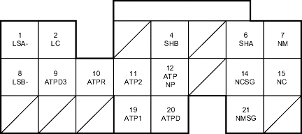

Fuel and Emissions Systems
|
11-17 |
PCM Inputs and Outputs at Connector C (22P)

Wire side of female terminals
NOTE: Standard battery voltage is 12 V.
Terminal number |
Wire colour |
Terminal name |
Description |
Signal |
1*2 |
WHT/BLK |
LSA- (A/T PRESSURE CONTROL SOLENOID VALVE A-SIDE |
Ground for A/T pressure control solenoid valve A |
|
2*2 |
YEL/BLU |
LC (TORQUE CONVERTER CLUTCH SOLENOID VALVE) |
Drives torque converter clutch solenoid valve |
With lock-up ON: battery voltage With lock-up OFF: about 0 V |
4*2 |
GRN/WHT |
SHB (SHIFT SOLENOID VALVE B) |
Drives shift solenoid valve B |
With engine running in 1st, 2nd gears: battery voltage With engine running in 3rd, 4th gears: about 0 V |
6*2 |
BLU/BLK |
SHA (SHIFT SOLENOID VALVE A) |
Drives shift solenoid valve A |
With engine running in 2nd, 3rd gears: battery voltage With engine running in 1st, 4th gears: about 0 V |
7*2 |
WHT/RED |
NM (MAINSHAFT SPEED SENSOR) |
Detects mainshaft speed sensor signals |
With engine running: pulses |
8*2 |
BRN/WHT |
LSB- (A/T PRESSURE CONTROL SOLENOID VALVE B-SIDE |
Ground for A/T pressure control solenoid valve B |
|
9*2 |
RED |
ATPD3 (TRANSMISSION RANGE SWITCH D3 POSITION) |
Detects transmission range switch D3 position signal |
In D3 position: about 0 V In any other position: about 5 V or battery voltage |
10*2 |
WHT |
ATPR (TRANSMISSION RANGE SWITCH R POSITION) |
Detects transmission range switch R position signal |
In R position: about 0 V In any other position: about 5 V or battery voltage |
11*2 |
BLU |
ATP2 (TRANSMISSION RANGE SWITCH 2 POSITION) |
Detects transmission range switch 2 position signal |
In 2nd position: about 0 V In any other position: about 5 V or battery voltage |
12*2 |
BLU/WHT |
ATPNP (TRANSMISSION RANGE SWITCH NEUTRAL/PARK POSITION) |
Detects transmission range switch Neutral/Park position signal |
In Park or neutral: about 0 V In any other position: about 5 V or battery voltage |
14*2 |
GRN |
NCSG (COUNTERSHAFT SPEED SENSOR GROUND) |
Ground for countershaft speed sensor |
|
15*2 |
BLU |
NC (COUNTERSHAFT SPEED SENSOR) |
Detects countershaft speed sensor signals |
With ignition switch ON (II), and front wheels rotating: battery voltage |
19*2 |
BRN |
ATP1 (TRANSMISSION RANGE SWITCH 1 POSITION) |
Detects transmission range switch 1 position signal |
In 1st position: about 0 V In any other position: about 5 V or battery voltage |
20*2 |
YEL |
ATPD (TRANSMISSION RANGE SWITCH D POSITION) |
Detects transmission range switch D position signal |
In D position: about 0 V In any other position: about 5 V or battery voltage |
21*2 |
WHT/GRN |
NMSG (MAINSHAFT SPEED SENSOR GROUND) |
Ground for mainshaft speed sensor |
|
*1: D16W7, D16A1 engines
*2: A/T